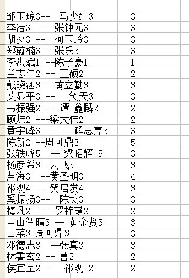

比赛对局谱.rar
比赛对局谱.rar［ 橘子香水 于 2012-3-17 18:14:53 时花20金币送鲜花一朵］
［ 橘子香水 于 2012-3-17 18:15:32 时花20金币送鲜花一朵］
［ 橘子香水 于 2012-3-17 18:15:45 时花20金币送鲜花一朵］
［ 橘子香水 于 2012-3-17 18:16:58 时花20金币送鲜花一朵］
［ 橘子香水 于 2012-3-17 18:17:06 时花20金币送鲜花一朵］
［ 文英 于 2012-3-17 18:40:54 时花20金币送鲜花一朵］
［ 文英 于 2012-3-17 18:41:00 时花20金币送鲜花一朵］
［ 于 2012-3-17 20:07:16 时花20金币送鲜花一朵］
［ 于 2012-3-17 20:07:19 时花20金币送鲜花一朵］
［ 于 2012-3-17 20:07:21 时花20金币送鲜花一朵］
［ 于 2012-3-17 20:07:22 时花20金币送鲜花一朵］
［ 于 2012-3-17 20:07:23 时花20金币送鲜花一朵］
［ 于 2012-3-17 20:07:24 时花20金币送鲜花一朵］
［ 有志青年 于 2012-3-17 21:39:01 时奖励此帖[金币加 100 威望加1］
［ 自来水 于 2012-3-18 14:00:23 时花20金币送鲜花一朵］

第三局：
王硕假先，溪月8打，交换
f6 g6 h6 j6 g7 f7 f8 j9
不知对手
兰志仁假先，溪月8打，不换
I7 I8 J7 G6 G5 F7 G8 F8 白胜
不知对手
第二盘：兰志仁假先，溪月8打，交换
I7 I8 J7 G6 G5 F7 G8 F8
和棋
不知对手
没有任何对局者信息
共计67张棋谱，仅四张棋谱对局者信息不全
引用：
原文由 奇林 发表于 2012-3-17 22:50:27 :
应该是兰志仁对王硕吧？
是的。
冰阿姨你那个对阵表是比赛之前列的，比赛开始后有了变化，我刚才重列了下
还有一直没对来出有志发的那张是谁的对局，得到裁判群里问下了。
